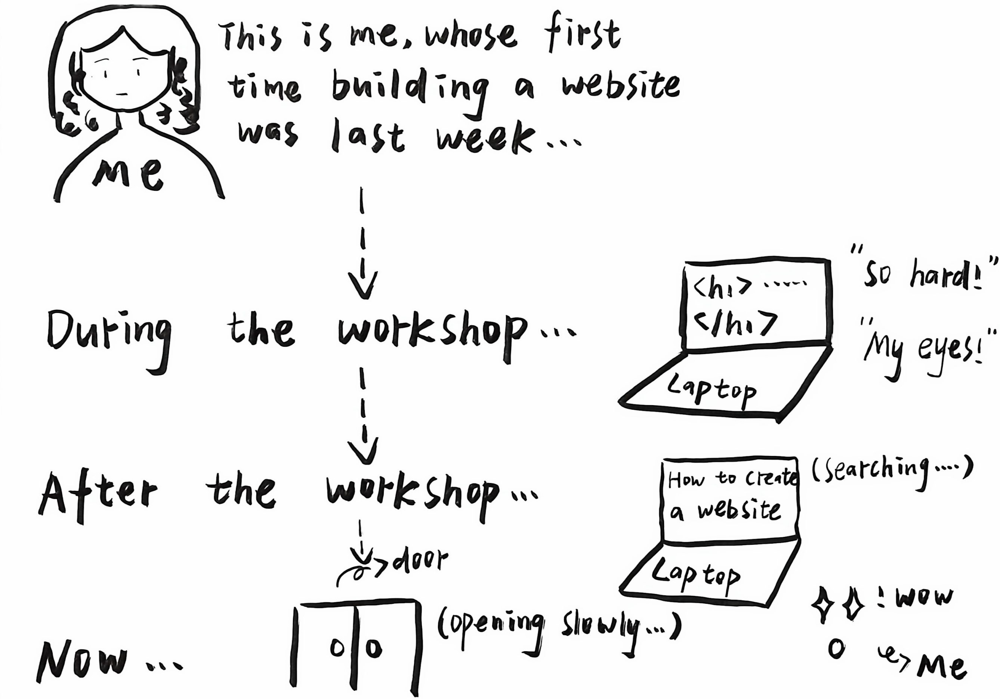
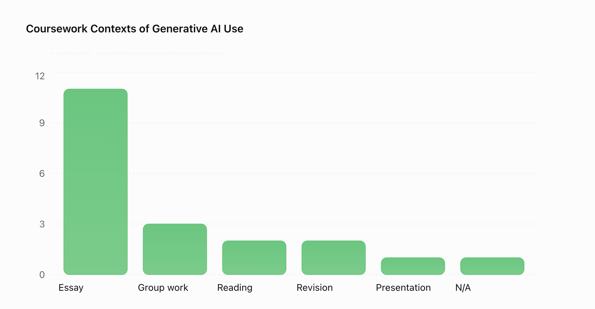
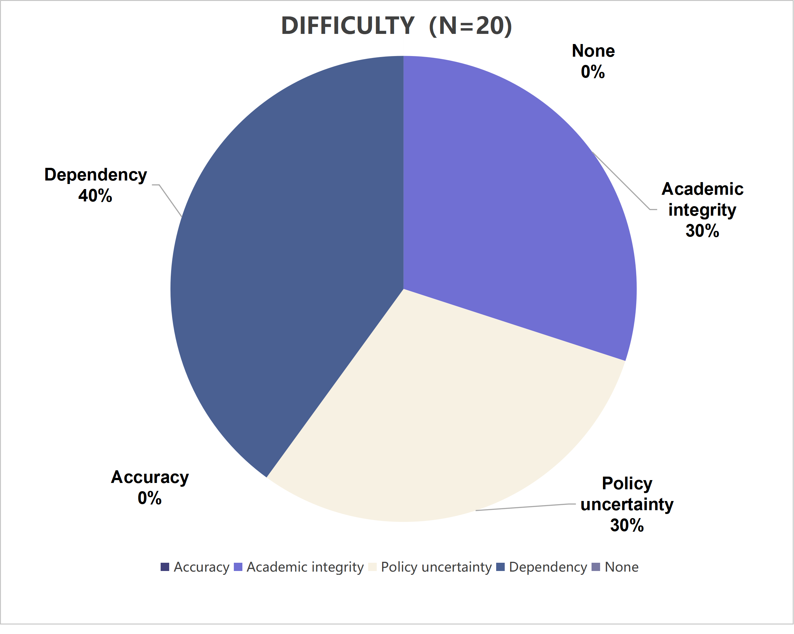

My Blog
Workshop 1: Creatig Websites
Last week I had my first workshop, and it was also my first time trying web design. It’s a bit difficult for me-I work slowly and sometimes find it quite challenging. But it’s also new and interesting. It feels like a door to a new world is slowly open for me. I’m looking forward to the next workshop!

Workshop 2: Web Scraping
Last week, we learnt how to scrape data from the Web and collect it for use. Before the workshop, I have touched some skills about web scraping, but just a little, not so familiar.
During the workshop, I followed Chris' steps to scrape data with Web Scraper. First, I downloaded Web Scraper and added it to Google Chrome. Then I open the website(bbc iplayer), a website about tv series. After that, I click 'inspect' and then began collecting data. There are two main ways to collect data— WebScraper and Python programming langguage. I found that Python programming language is so difficult for me that I choose WebScraper to help me finish data collection.
From this, I learned that how to scrape data from the website and organise it into an excel. In particular, I realised that web scraping is really helpful and efficient in data collection.
Workshop 3: Data Practice
Last week, the goal of our workshop is to get in touch with data and know more about its power. It not only based on workshop 2(web scraping) , but the foundation of data visualization.
During the workshop, we divided into several groups. I discussed with my group members. After the discussion, we came up with a topic about our group work—In online public discussions about arts and humanities coursework at UK universities, what uses of generative AI, difficulties encountered, and attitudes do participants express? Besides, I use ‘reddit’ to search for data about our topic.
What I learned from this workshop are as follows. First, based on workshop 2(web scraping) , I know more about ways to scrape data. Additionally, it is my first time using ‘reddit’, I read many posts there, it really shows lots of information.
There are still many difficulties that stuck me in this workshop. The first one is that sometimes I can’t follow the pace of discussion. This means that it is really difficult for me to express my opinion, even ask questions for help. Second, I am not so good at searching. In other words, I need to spend more time so that I can get the information that I need.
Honestly speaking, I think measures can be taken to solve the difficulties I met. First, maybe I have to spend more time on preview, in order to get some basic information about the class. Second, I think I should practice more to improve the efficiency. Finally, improving my English ability is also important for me.
Workshop 4: Data Visualization
This week, as an extension of data practice, we shared our observation about the homework — collect and code data that related to our selected topic. Besides, we also learned about how to visualize data that we have already collected.
During the workshop, we shared our current difficulties about data collecting and the measures to improve if we have enough time. We mentioned that the data we had collected may be subjective, because it is hard to put a post into an exact category — they often lie somewhere between categories. We also mentioned that if we have enough, we may compare data from different platforms and different period.
What I learned from this workshop are as follows. First, there are lots of ways to visualize data, such as excel, tableau and some other tools. The charts that we made have to be easy to read, they have to have a title, have to tell the audience where the data comes from. Second, different types of data need to be presented with chart types suited to them. The data sample we collected this time was relatively small, and most of the data were about frequency rather than showing trends over time. We therefore chose bar charts and pie charts to visualise the data.
Perhaps because I had some prior exposure to data visualisation and a little experience with chart-making, I found this session relatively manageable for me. All in all, I consider that with the more workshop that I took, the better I adjust with the pace and the content.




Back to Home